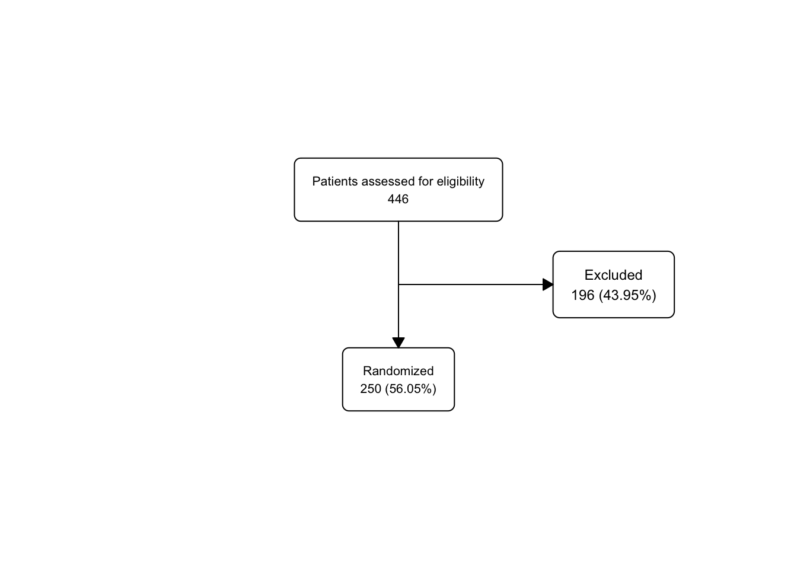
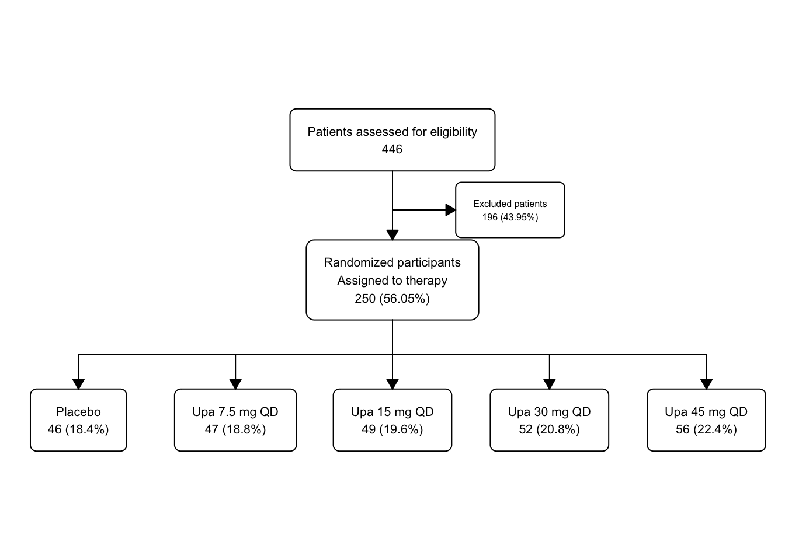
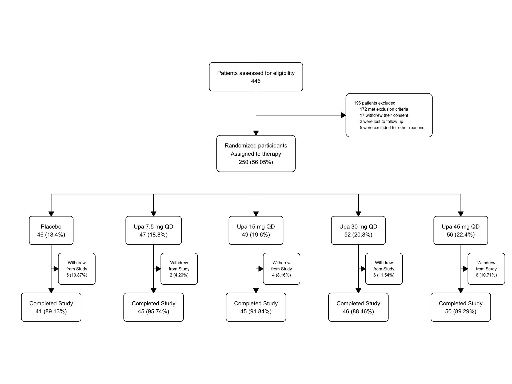
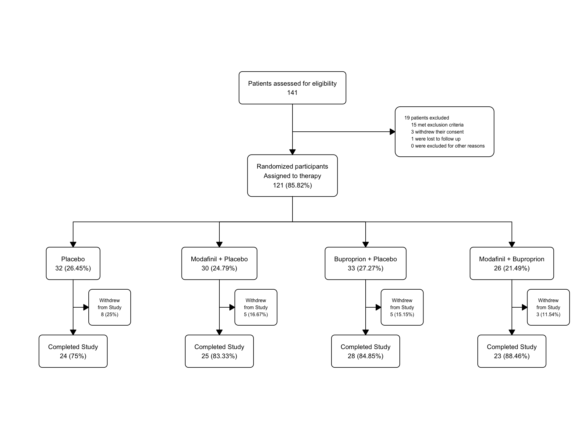

Chapter 49 Using the {flowchart} package for CONSORT diagrams in R
This chapter is part of the Clinical Studies pathway.
Packages needed for this chapter include {flowchart}, and {tidyverse}. If you don’t have these packages installed, you can install them by copying the code chunk below and running it in your local RStudio session.
49.1 Why Flowcharts?
In clinical trials, or even in observational studies, it is important to provide a visual representation of the study design and participant flow. The CONSORT flowchart is a standard way to represent the flow of participants as they are included or excluded, assigned to a group/arm, or withdrawn from participation all the way through a study. The {flowchart} package in R provides a relatively simple way to create these flowcharts, with a transparent underlying structure.
The {flowchart} package can take a one-row-per-participant data frame, and turn this into a flowchart (fc) object. This is a 2 part list object, which contains the dataframe as a data object and the details for each box in the diagram in the fc object. You can filter participants into excluded, assigned to an arm, or withdrawn vs completed with fc_filter. The fc_draw function can use the fc object parameters as instructions to draw the CONSORT diagram. If you want to make modifications to the individual boxes, the fc_modify function gives you access to modify the characteristics of each box in the diagram.
49.2 Loading Libraries
First, you need to load the key libraries for this project. Copy and run the code chunk below to load these libraries into your local Rstudio session:
49.4 Data
We will build a fake dataset for a clinical trial testing statin vs PBO in patients with cirrhosis to reduce the incidence of HCC This will create a one-participant-per-row dataset with columns for inclusion criteria, exclusion criteria, withdrawal of consent, lost to follow-up, and other reasons for exclusion. We will also include columns for group assignment, completion status, and adverse events.
# Simulate the data
tibble::tibble(
id = 1:49,
inclusion_crit = rep("No", 49),
exclusion_crit = c(
rep("No", 45),
rep("Yes", 4)
),
withdrew_consent = c(
rep("No", 43),
rep("Yes", 2), rep(NA, 4)
),
lost_to_follow_up = c(
rep("No", 42),
rep("Yes", 1), rep(NA, 6)
),
other_reasons = c(
rep("No", 40),
rep("Yes", 2), rep(NA, 7)
),
group = c(rep("Placebo", 20), rep("Atorvastatin 40 mg QD", 20), rep(NA, 9)),
completed = c(
rep("Yes", 19), rep("No", 1),
rep("Yes", 20), rep("No", 0),
rep(NA, 9)
),
adverse_event = c(
rep("No", 17), rep("Yes", 3), rep("No", 19), rep("Yes", 1),
rep(NA, 9)
),
other_reason_withdraw = c(
rep("No", 40),
rep(NA, 9)
),
itt = c(rep("Yes", 40), rep("No", 9)),
reason_itt = c(rep(NA, 40), rep("No response", 9)),
pp = c(rep("Yes", 40), rep("No", 9)),
reason_pp = c(rep(NA, 40), rep("No response", 9))
) -> statin
statin |>
mutate(group = factor(group,
ordered = TRUE,
levels = c("Placebo", "Atorvastatin 40 mg QD")
)) -> statin2Now we will start to create the flowchart using the {flowchart} package. We will start with the opening box. Note that we made the group variable an ordered factor with two levels, “Placebo” and “Atorvastatin 40 mg QD”. This will help control the order of the arms in the diagram, rather than using the default (alphabetical) order.
The as_fc() function converst your dataset into a list-object. This list contains two distinct objects, (1) the data (data), and (2) the flowchart data (fc). The flowchart data is a list of boxes, each with an id, location (x,y), counts, percentage, text, type, and formatting parameters.
THe fc_draw() function will then render the flowchart in the Plots pane. As we only have a single box to start with, it is automatically placed in the center of the pane (x = 0.5, y = 0.5). As we add more boxes, the locations of the boxes will be automatically adjusted, though we can fine-tune locations and fonts with minor adjustments later using the fc_modify() function.
Let’s take a moment to look at the underlying data structure of the flowchart object. The statin_fc object is a list with two elements: (1) data (your dataframe), and (2) the flowchart data, in which each box has an id, location (x,y), counts, percentage, text, type, and formatting parameters. You can look at the flowchart data with the fc_view(what = 'fc') function.
Examine the structure revealed by the str() function. Run the str(statin_fc) to see the overall data structure. Then run the fc_view(what = 'fc') function to see the details for the initial box in the flowchart, and these are used by fc_draw to draw the diagram. At this point, we have the dimensions and location of the single box in the fc tibble.
## List of 2
## $ data: tibble [49 × 14] (S3: tbl_df/tbl/data.frame)
## ..$ id : int [1:49] 1 2 3 4 5 6 7 8 9 10 ...
## ..$ inclusion_crit : chr [1:49] "No" "No" "No" "No" ...
## ..$ exclusion_crit : chr [1:49] "No" "No" "No" "No" ...
## ..$ withdrew_consent : chr [1:49] "No" "No" "No" "No" ...
## ..$ lost_to_follow_up : chr [1:49] "No" "No" "No" "No" ...
## ..$ other_reasons : chr [1:49] "No" "No" "No" "No" ...
## ..$ group : Ord.factor w/ 2 levels "Placebo"<"Atorvastatin 40 mg QD": 1 1 1 1 1 1 1 1 1 1 ...
## ..$ completed : chr [1:49] "Yes" "Yes" "Yes" "Yes" ...
## ..$ adverse_event : chr [1:49] "No" "No" "No" "No" ...
## ..$ other_reason_withdraw: chr [1:49] "No" "No" "No" "No" ...
## ..$ itt : chr [1:49] "Yes" "Yes" "Yes" "Yes" ...
## ..$ reason_itt : chr [1:49] NA NA NA NA ...
## ..$ pp : chr [1:49] "Yes" "Yes" "Yes" "Yes" ...
## ..$ reason_pp : chr [1:49] NA NA NA NA ...
## $ fc : tibble [1 × 17] (S3: tbl_df/tbl/data.frame)
## ..$ id : num 1
## ..$ x : num 0.5
## ..$ y : num 0.5
## ..$ n : int 49
## ..$ N : int 49
## ..$ perc : chr "100"
## ..$ text : chr "Initial dataframe\n49"
## ..$ type : chr "init"
## ..$ group : logi NA
## ..$ just : chr "center"
## ..$ text_color : chr "black"
## ..$ text_fs : num 8
## ..$ text_fface : num 1
## ..$ text_ffamily: logi NA
## ..$ text_padding: num 1
## ..$ bg_fill : chr "white"
## ..$ border_color: chr "black"
## - attr(*, "class")= chr "fc"## # A tibble: 1 × 17
## id x y n N perc text type group just text_color text_fs
## <dbl> <dbl> <dbl> <int> <int> <chr> <chr> <chr> <lgl> <chr> <chr> <dbl>
## 1 1 0.5 0.5 49 49 100 "Ini… init NA cent… black 8
## # ℹ 5 more variables: text_fface <dbl>, text_ffamily <lgl>, text_padding <dbl>,
## # bg_fill <chr>, border_color <chr>It is pretty simple so far, but will grow increasingly complex. Later, we may want to modify parts of the flowchart, such as the colors, the text, or the shapes. We can do this by modifying the flowchart object directly with the fc_modify function. It helps a lot to be able to find the id of each box in the flowchart. You can do this with the fc_view(what = 'fc') function.
49.5 Branching
Now we can add branching to the flowchart to document the exclusions. This requires fc_filter to separate the excluded patients from the randomized ones. We will also add a box for the excluded patients. We will add custom labels for the boxes.
statin_fc2 <- statin2 |>
as_fc(label = "Patients assessed for eligibility") |>
fc_filter(!is.na(group), label = "Randomized", show_exc = TRUE)
fc_draw(statin_fc2)Now let’s peek at the flowchart data under the hood with the fc_view(what = 'fc') function
## # A tibble: 3 × 17
## id x y n N perc text type group just text_color text_fs
## <int> <dbl> <dbl> <int> <int> <chr> <chr> <chr> <lgl> <chr> <chr> <dbl>
## 1 1 0.5 0.667 49 49 100 "Pat… init NA cent… black 8
## 2 2 0.5 0.333 40 49 81.63 "Ran… filt… NA cent… black 8
## 3 3 0.65 0.5 9 49 18.37 "Exc… excl… NA cent… black 6
## # ℹ 5 more variables: text_fface <dbl>, text_ffamily <lgl>, text_padding <dbl>,
## # bg_fill <chr>, border_color <chr>Now we have 3 rows in statin_fc2, corresponding to each box in the flowchart. The first row is the opening box, the second row is the randomized box, and the third row is the excluded box. You might have (reasonably) guessed that the Excluded box would have id=2, but now we know better. We now know that the Excluded box has id=3, and this could be helpful to target a future fc_modify call to increase the font size of the text in the box (the text_fs column in the fc tibble).
49.6 Splitting into Groups (Treatment Arms)
Then we can start to split the participants into treatment arms (groups) with the fc_split function.
statin_fc3 <- statin2 |>
as_fc(label = "Patients assessed for eligibility") |>
fc_filter(!is.na(group), label = "Randomized participants\nAssigned to therapy", show_exc = TRUE, label_exc = "Excluded patients") |>
fc_split(group)
statin_fc3 |>
fc_draw()Let’s take a peek under the hood with the fc_view(what = 'fc') function.
## # A tibble: 5 × 17
## id x y n N perc text type group just text_color text_fs
## <int> <dbl> <dbl> <int> <int> <chr> <chr> <chr> <chr> <chr> <chr> <dbl>
## 1 1 0.5 0.75 49 49 100 "Pat… init <NA> cent… black 8
## 2 2 0.5 0.5 40 49 81.63 "Ran… filt… <NA> cent… black 8
## 3 3 0.65 0.625 9 49 18.37 "Exc… excl… <NA> cent… black 6
## 4 4 0.25 0.25 20 40 50 "Pla… split Plac… cent… black 8
## 5 5 0.75 0.25 20 40 50 "Ato… split Ator… cent… black 8
## # ℹ 5 more variables: text_fface <dbl>, text_ffamily <lgl>, text_padding <dbl>,
## # bg_fill <chr>, border_color <chr>There are now 5 distinct boxes, and you can see that the x and y parameters are automatically adjusted to maintain a reasonable spacing between boxes.
49.6.1 A Short Tangent on {ifelse}
The {ifelse} function is often used for branching decisions, and will be used in the fc_modify function below. If you have not seen this before, it can be a bit confusing.
The {ifelse} function will be nested within a mutate function to mutate a specific bit of the fc tibble, which provides box instructions to fc_draw.
We want to modify one parameter of one particular box at a time in the fc tibble, but leave the rest of their boxes with their defaults. We can do this with an {ifelse} function call.
The {ifelse} function has 3 arguments:
- a logical test,
- a value to return if the test is TRUE, and
- a value to return if the test is FALSE.
In this case, the logical test is - “is this the box we want?” (box id ==4).
If it is, we will change the background color to “gray20” (which is close to black) and the text color to “white”. When it is not the box we want (all of the other boxes), we will use the defaults (bg_fill, and text_color) without any changes for all of the other boxes.
We will then repeat this process to change box 5 to a different color.
Just for fun, let’s try a targeted fc_modify call to change the background color in the text boxes for each arm.
We will mutate the parameters for a specific box with an {ifelse} function, only changing that box, and leaving the rest of the boxes alone.
49.7 Filtering for Completers
Now let’s filter for completers (vs. participants who withdrew from participation) and peek at the fc object along the way.
You can also view the flowchart data by calling statin_fc4$fc (see below and in your local console).
The fc_filter function is used to filter the data to find those consenters who were excluded from participation, and the show_exc argument is used to show the excluded patients in the flowchart. The label_exc argument is used to label the excluded patients in the flowchart.
You will get the fc object with the details for all 9 boxes in the Console Pane, and the flowchart will be displayed in the Plots Pane by running the code chunk below in your local session of RStudio.
statin2 |>
as_fc(label = "Patients assessed for eligibility") |>
fc_filter(!is.na(group), label = "Randomized participants\nAssigned to therapy", show_exc = TRUE, label_exc = "Excluded patients") |>
fc_split(group) |>
fc_filter(completed == "Yes",
label = "Completed Study", show_exc = TRUE,
label_exc = "Withdrew\nfrom Study"
) -> statin_fc4
statin_fc4$fc## # A tibble: 9 × 17
## id x y n N perc text type group just text_color text_fs
## <int> <dbl> <dbl> <int> <int> <chr> <chr> <chr> <chr> <chr> <chr> <dbl>
## 1 1 0.5 0.8 49 49 100 "Pat… init <NA> cent… black 8
## 2 2 0.5 0.6 40 49 81.63 "Ran… filt… <NA> cent… black 8
## 3 3 0.65 0.7 9 49 18.37 "Exc… excl… <NA> cent… black 6
## 4 4 0.25 0.4 20 40 50 "Pla… split Plac… cent… black 8
## 5 5 0.75 0.4 20 40 50 "Ato… split Ator… cent… black 8
## 6 6 0.75 0.2 20 20 100 "Com… filt… Ator… cent… black 8
## 7 7 0.9 0.3 0 20 0 "Wit… excl… Ator… cent… black 6
## 8 8 0.25 0.2 19 20 95 "Com… filt… Plac… cent… black 8
## 9 9 0.4 0.3 1 20 5 "Wit… excl… Plac… cent… black 6
## # ℹ 5 more variables: text_fface <dbl>, text_ffamily <lgl>, text_padding <dbl>,
## # bg_fill <chr>, border_color <chr>statin_fc4 |> fc_draw(
box_corners = "sharp",
title = "CONSORT Diagram",
title_fs = 24,
title_color = "red",
title_fface = 3
)All the x and y locations are automatically adjusted in the fc object to maintain a reasonable spacing between boxes. The more crowded (excluded and withdrawal) boxes are automatically assigned a smaller text size (text_fs).
In this example of the fc_draw function, we made the corners of the boxes sharp with the box_corners = "sharp" argument, and added a title for the whole diagram, and formatted it a bit with font size, color, and an italic font face. These options can be found in the documentation for fc_draw. Note that there are multiple tweaks that you can make to the arrowhead shapes and sizes as documented in the fc_draw reference page.
49.8 Modify exclusions for more detailed labels
Currently the exclusions are labeled as “Excluded patients”. We can modify this to provide more detailed information about the reasons for exclusion. This is considered standard practice for a CONSORT diagram.
Let’s create the multiline text for the exclusions before randomization. We will store this text in the object text_exc and then use it to modify the flowchart object. We are selecting for and adding up the participants excluded in each group, then labeling each group, with a line break \n between each reason for exclusion. The text_exc` object will be printed in the Console after up copy and run the code chunk below in your local RStudio session.
text_exc <- paste0(
sum(statin2$exclusion_crit == "Yes",
statin2$withdrew_consent == "Yes",
statin2$lost_to_follow_up == "Yes",
statin2$other_reasons == "Yes",
na.rm = TRUE
),
" patients excluded\n",
" ",
sum(statin2$exclusion_crit == "Yes", na.rm = TRUE),
" met exclusion criteria\n",
" ",
sum(statin2$withdrew_consent == "Yes", na.rm = TRUE),
" withdrew their consent\n",
" ",
sum(statin2$lost_to_follow_up == "Yes", na.rm = TRUE),
" was lost to follow up\n",
" ",
sum(statin2$other_reasons == "Yes", na.rm = TRUE),
" were excluded for other reasons"
)
text_exc## [1] "9 patients excluded\n 4 met exclusion criteria\n 2 withdrew their consent\n 1 was lost to follow up\n 2 were excluded for other reasons"Take a look at the output (multiline) text in the console. See if it is what you expected.
Now let’s add this multiline text (text_exc) for exclusions to the flowchart.
We are replacing the text in the exclusions box (id == 3) with the more detailed text we created above. We are also adjusting the justification and x location of the text in the box to make it look better, since this box will now be a lot taller, and becomes a bit cramped by the other boxes. We are still turning on show_exc and applying the box label of “Excluded patients” to this box. Note that we fine-tune the arrow_angle in fc_draw to make the arrows look better.
statin_fc5 <- statin2 |>
as_fc(label = "Patients assessed for eligibility") |>
fc_filter(!is.na(group), label = "Randomized participants\nAssigned to therapy", show_exc = TRUE, label_exc = "Excluded patients") |>
fc_modify( # modifying only box 3 - exclusions
~ . |>
dplyr::mutate(
text = ifelse(id == 3, text_exc, text),
just = ifelse(id == 3, "left", "center"),
x = ifelse(id == 3, x + 0.11, x)
)
) |>
fc_split(group) |>
fc_filter(completed == "Yes", label = "Completed Study", show_exc = TRUE, label_exc = "Withdrew\nfrom Study")
statin_fc5 |>
fc_draw(arrow_angle = 18)We can peek under the hood at the new flowchart structure with 9 boxes. Find the modifications we made in the x, text, and just fields of box 3.
## # A tibble: 9 × 17
## id x y n N perc text type group just text_color text_fs
## <int> <dbl> <dbl> <int> <int> <chr> <chr> <chr> <chr> <chr> <chr> <dbl>
## 1 1 0.5 0.8 49 49 100 "Pat… init <NA> cent… black 8
## 2 2 0.5 0.6 40 49 81.63 "Ran… filt… <NA> cent… black 8
## 3 3 0.76 0.7 9 49 18.37 "9 p… excl… <NA> left black 6
## 4 4 0.25 0.4 20 40 50 "Pla… split Plac… cent… black 8
## 5 5 0.75 0.4 20 40 50 "Ato… split Ator… cent… black 8
## 6 6 0.75 0.2 20 20 100 "Com… filt… Ator… cent… black 8
## 7 7 0.9 0.3 0 20 0 "Wit… excl… Ator… cent… black 6
## 8 8 0.25 0.2 19 20 95 "Com… filt… Plac… cent… black 8
## 9 9 0.4 0.3 1 20 5 "Wit… excl… Plac… cent… black 6
## # ℹ 5 more variables: text_fface <dbl>, text_ffamily <lgl>, text_padding <dbl>,
## # bg_fill <chr>, border_color <chr>You may want to fine-tune the box padding to make some of the boxes smaller, or move the Atorvastatin branch (and its completers) a bit to the left to make more room for the withdrawals box.
Just as an example, we can fine-tune the atorvatstain group, and use fc_modify to make the withdrawal boxes red, and the completed boxes green.
statin_fc6 <- statin_fc5 |>
fc_modify( # modifying only boxes 6-9
~ . |>
dplyr::mutate(
x = ifelse(id == 5, x - 0.07, x),
x = ifelse(id == 6, x - 0.07, x),
x = ifelse(id == 7, x - 0.05, x),
bg_fill = ifelse(id == 7, "pink", bg_fill),
bg_fill = ifelse(id == 9, "pink", bg_fill),
bg_fill = ifelse(id == 6, "lightgreen", bg_fill),
bg_fill = ifelse(id == 8, "lightgreen", bg_fill)
)
)
fc_draw(statin_fc6, arrow_angle = 22)Other than the slightly silly colors, this is a pretty reasonable CONSORT diagram. You can fine tune font faces, add a title, change font sizes and box locations, and adjust the arrow angles to make the diagram look exactly how you want it to look.
You can also fc_export() this diagram object to a file as a pdf, png, jpeg, tiff, or other format as needed. You can even use fc_merge or fc_stack to combine multiple flowcharts into one diagram before you fc_export.
49.8.1 Time for a Quiz
Take a peek at the last fc object, statin_fc6, which provides instructions to fc_draw.
- What command can you run to print out the last flowchart object,
statin_fc6(pick the best answer)?
OK, now print out the statin_fc6$fc object in your local RStudio and inspect it for the following questions.
- What is the y value for the first box (Patients Assessed)?
- What is the font size (text_fs) value for the box with id == 9?
- What is the justification and text_color of the box with id == 3?
49.9 A More Complicated Study
Now we will build the CONSORT diagram for a more complicated study of Upadacitinib in ulcerative colitis. We will not use the actual data from the study, but a rough approximation that is good enough to make the assorted boxes in the CONSORT diagram work.
49.10 Example
We will build a 2nd example dataset for the {flowchart} package. This dataset will be from the phase 3 Upa study for UC. The data will be simulated to match the structure of the data from the Upa study to reproduce the CONSORT diagram. The original paper (and CONSORT diagram) can be found here.

Our goal is to replicate this Figure 1.
Dataset construction will be as follows:
- 446 participants will be simulated and assessed for eligibility
- 196 participants will be excluded
- 250 participants will be randomized to the study
- 46-56 participants will be randomly assigned to the 5 treatment groups
- 2-6 from each arm will discontinue treatment
- 41-50 from each arm will complete the study
We will use the data provided in Figure 1, and will not use any patient identifying data (as this is all made up data).
The variables in the dataset should include:
- id: participant identifier
- inclusion_crit: inclusion criteria met (Yes/No)
- exclusion_crit: exclusion criteria met (Yes/No) Other reasons for exclusion, including:
- withdrew_consent: withdrew consent (Yes/No)
- lost_to_follow_up: lost to follow-up (Yes/No)
- other_reasons: other reasons for exclusion (Yes/No)
- group (treatment group)
- completed: completed the study (Yes/No) Reasons for non-completion, including:
- adverse_event (Yes/No)
- lack_of_efficacy (Yes/No)
- other_reasons (Yes/No)
- itt: intention to treat (Yes/No)
- reason_itt: reason for not being included in the intention to treat analysis
- pp: per protocol (Yes/No)
- reason_pp: reason for not being included in the per protocol analysis
Copy the code chunk below into your local RStudio session and run it to create the dataset for the Upa study.
# Simulate the data
tibble::tibble(
id = 1:446,
inclusion_crit = rep("Yes", 446),
exclusion_crit = c(rep("No", 274), rep("Yes", 172)),
withdrew_consent = c(rep("No", 257), rep("Yes", 17), rep(NA, 172)),
lost_to_follow_up = c(rep("No", 255), rep("Yes", 2), rep(NA, 189)),
other_reasons = c(rep("No", 250), rep("Yes", 5), rep(NA, 191)),
group = c(rep("Placebo", 46), rep("Upa 7.5 mg QD", 47), rep("Upa 15 mg QD", 49), rep("Upa 30 mg QD", 52), rep("Upa 45 mg QD", 56), rep(NA, 196)),
completed = c(
rep("Yes", 41), rep("No", 5),
rep("Yes", 45), rep("No", 2),
rep("Yes", 45), rep("No", 4),
rep("Yes", 46), rep("No", 6),
rep("Yes", 50), rep("No", 6),
rep(NA, 196)
),
adverse_event = c(
rep("No", 41), rep("Yes", 3), rep("No", 2),
rep("No", 45), rep("Yes", 1), rep("No", 1),
rep("No", 45), rep("Yes", 2), rep("No", 2),
rep("No", 46), rep("Yes", 4), rep("No", 2),
rep("No", 50), rep("Yes", 4), rep("No", 2),
rep(NA, 196)
),
lack_of_efficacy = c(
rep("No", 44), rep("Yes", 2),
rep("No", 46), rep("Yes", 1),
rep("No", 47), rep("Yes", 1), rep("No", 1),
rep("No", 50), rep("Yes", 1), rep("No", 1),
rep("No", 54), rep("Yes", 2),
rep(NA, 196)
),
other_reason_withdraw = c(
rep("No", 46),
rep("No", 47),
rep("No", 48), rep("Yes", 1),
rep("No", 51), rep("Yes", 1),
rep("No", 56),
rep(NA, 196)
),
itt = c(rep("Yes", 250), rep("No", 196)),
reason_itt = c(rep(NA, 250), rep("No response", 196)),
pp = c(rep("Yes", 250), rep("No", 196)),
reason_pp = c(rep(NA, 250), rep("No response", 196))
) -> upa
upa |>
mutate(group = factor(group,
ordered = TRUE,
levels = c("Placebo", "Upa 7.5 mg QD", "Upa 15 mg QD", "Upa 30 mg QD", "Upa 45 mg QD")
)) -> upa2Now we will create the flowchart using the {flowchart} package. We will start with the opening box.
## List of 2
## $ data: tibble [446 × 15] (S3: tbl_df/tbl/data.frame)
## $ fc : tibble [1 × 17] (S3: tbl_df/tbl/data.frame)
## - attr(*, "class")= chr "fc"
You can go to the Environment pane to find the upa_fc object. Click on it to reveal a list object that contains 2 objects: (1) the data and (2) the flowchart (fc). Click on the blue arrows next to these to reveal the contents. The fc tibble object is a tibble of details on how to draw the boxes, what to put inside them, and how to format each box and its contents. The data object is the original data frame that was used to create the flowchart.
You can also see these in the Console pane by running the following code in the Console - upa_fc$data and upa_fc$fc. Or in the top left Source pane by running View(upa_fc$data) and View(upa_fc$fc) in your Console.
The fc tibble guides the flowchart drawn by fc_draw. The arguments to fc_draw allow you to adjust box corners, arrow formatting, and a title for the whole object, but the details of how and where to draw the boxes is determined by data in the fc tibble.
49.11 Branching
Now we can add branching to the flowchart to document the excluded consenters. We will use fc_filter to create a distinct branch for those who were eligible, and label it “Randomized”. We will also use show_exc = TRUE to show the excluded box in the flowchart.
upa_fc2 <- upa2 |>
as_fc(label = "Patients assessed for eligibility") |>
fc_filter(!is.na(group), label = "Randomized", show_exc = TRUE)
fc_draw(upa_fc2)
Take a peek at the underlying flowchart structure of upa_fc2, as we now have 3 boxes in the fc tibble.
## # A tibble: 3 × 17
## id x y n N perc text type group just text_color text_fs
## <int> <dbl> <dbl> <int> <int> <chr> <chr> <chr> <lgl> <chr> <chr> <dbl>
## 1 1 0.5 0.667 446 446 100 "Pat… init NA cent… black 8
## 2 2 0.5 0.333 250 446 56.05 "Ran… filt… NA cent… black 8
## 3 3 0.65 0.5 196 446 43.95 "Exc… excl… NA cent… black 6
## # ℹ 5 more variables: text_fface <dbl>, text_ffamily <lgl>, text_padding <dbl>,
## # bg_fill <chr>, border_color <chr>Just for practice, let’s use fc_modify to push the excluded box (id == 3) further to the right (and leave all the other boxes in the same x dimension), and use a bigger font size (9) for the text in only this box, leaving the other boxes with their default text_fs.
upa_fc2 |>
fc_modify(
~ . |>
dplyr::mutate(
x = ifelse(id == 3, 0.77, x),
text_fs = ifelse(id == 3, 9, text_fs)
)
) |>
fc_draw()
49.12 Splitting into Groups (Treatment Arms)
Now we will use fc_split to split the flowchart into branches based on the group variable. We will still show the “Excluded” group.
upa_fc2 <- upa2 |>
as_fc(label = "Patients assessed for eligibility") |>
fc_filter(!is.na(group), label = "Randomized participants\nAssigned to therapy", show_exc = TRUE, label_exc = "Excluded patients") |>
fc_split(group)
fc_draw(upa_fc2)
Now this is starting to look like a proper CONSROT diagram, with multiple arms.
Take a peek at the underlying flowchart structure of upa_fc2.
There is a lot of detail for each of the8 boxes. The Excluded box is a bit cramped by other boxes, but that is something we can fix later with fc_modify.
## # A tibble: 8 × 17
## id x y n N perc text type group just text_color text_fs
## <int> <dbl> <dbl> <int> <int> <chr> <chr> <chr> <chr> <chr> <chr> <dbl>
## 1 1 0.5 0.75 446 446 100 "Pat… init <NA> cent… black 8
## 2 2 0.5 0.5 250 446 56.05 "Ran… filt… <NA> cent… black 8
## 3 3 0.65 0.625 196 446 43.95 "Exc… excl… <NA> cent… black 6
## 4 4 0.1 0.25 46 250 18.4 "Pla… split Plac… cent… black 8
## 5 5 0.3 0.25 47 250 18.8 "Upa… split Upa … cent… black 8
## 6 6 0.5 0.25 49 250 19.6 "Upa… split Upa … cent… black 8
## 7 7 0.7 0.25 52 250 20.8 "Upa… split Upa … cent… black 8
## 8 8 0.9 0.25 56 250 22.4 "Upa… split Upa … cent… black 8
## # ℹ 5 more variables: text_fface <dbl>, text_ffamily <lgl>, text_padding <dbl>,
## # bg_fill <chr>, border_color <chr>Let’s experiment by modifying the background color of placebo to gray, and the increasing doses of Upa to graded shades of blue.
upa_fc2 |>
fc_modify(
~ . |>
dplyr::mutate(
bg_fill = ifelse(id == 4, "gray", bg_fill),
bg_fill = ifelse(id == 5, "lightblue", bg_fill),
bg_fill = ifelse(id == 6, "dodgerblue1", bg_fill),
bg_fill = ifelse(id == 7, "dodgerblue2", bg_fill),
bg_fill = ifelse(id == 8, "dodgerblue3", bg_fill)
)
) |>
fc_draw()49.13 Filtering for Completers
Now let’s filter for completers
but print the fc object in the middle so that we can see what is going on under the hood.
upa2 |>
as_fc(label = "Patients assessed for eligibility") |>
fc_filter(!is.na(group), label = "Randomized participants\nAssigned to therapy", show_exc = TRUE, label_exc = "Excluded patients") |>
fc_split(group) |>
fc_filter(completed == "Yes", label = "Completed Study", show_exc = TRUE, label_exc = "Withdrew\nfrom Study") -> upa_fc4
upa_fc4$fc## # A tibble: 18 × 17
## id x y n N perc text type group just text_color
## <int> <dbl> <dbl> <int> <int> <chr> <chr> <chr> <chr> <chr> <chr>
## 1 1 0.5 0.8 446 446 100 "Patients a… init <NA> cent… black
## 2 2 0.5 0.6 250 446 56.05 "Randomized… filt… <NA> cent… black
## 3 3 0.65 0.7 196 446 43.95 "Excluded p… excl… <NA> cent… black
## 4 4 0.1 0.4 46 250 18.4 "Placebo\n4… split Plac… cent… black
## 5 5 0.3 0.4 47 250 18.8 "Upa 7.5 mg… split Upa … cent… black
## 6 6 0.5 0.4 49 250 19.6 "Upa 15 mg … split Upa … cent… black
## 7 7 0.7 0.4 52 250 20.8 "Upa 30 mg … split Upa … cent… black
## 8 8 0.9 0.4 56 250 22.4 "Upa 45 mg … split Upa … cent… black
## 9 9 0.1 0.2 41 46 89.13 "Completed … filt… Plac… cent… black
## 10 10 0.15 0.3 5 46 10.87 "Withdrew\n… excl… Plac… cent… black
## 11 11 0.5 0.2 45 49 91.84 "Completed … filt… Upa … cent… black
## 12 12 0.55 0.3 4 49 8.16 "Withdrew\n… excl… Upa … cent… black
## 13 13 0.7 0.2 46 52 88.46 "Completed … filt… Upa … cent… black
## 14 14 0.75 0.3 6 52 11.54 "Withdrew\n… excl… Upa … cent… black
## 15 15 0.9 0.2 50 56 89.29 "Completed … filt… Upa … cent… black
## 16 16 0.95 0.3 6 56 10.71 "Withdrew\n… excl… Upa … cent… black
## 17 17 0.3 0.2 45 47 95.74 "Completed … filt… Upa … cent… black
## 18 18 0.35 0.3 2 47 4.26 "Withdrew\n… excl… Upa … cent… black
## # ℹ 6 more variables: text_fs <dbl>, text_fface <dbl>, text_ffamily <lgl>,
## # text_padding <dbl>, bg_fill <chr>, border_color <chr>
Now the flowchart is getting a bit crowded in the Plots windowpane, as we are up to 18 boxes in this small space. You may want to zoom it (click on the zoom button at the top left of the Plots window) to see a less crowded version.
Let’s check the structure of the fc object again.
## # A tibble: 18 × 17
## id x y n N perc text type group just text_color
## <int> <dbl> <dbl> <int> <int> <chr> <chr> <chr> <chr> <chr> <chr>
## 1 1 0.5 0.8 446 446 100 "Patients a… init <NA> cent… black
## 2 2 0.5 0.6 250 446 56.05 "Randomized… filt… <NA> cent… black
## 3 3 0.65 0.7 196 446 43.95 "Excluded p… excl… <NA> cent… black
## 4 4 0.1 0.4 46 250 18.4 "Placebo\n4… split Plac… cent… black
## 5 5 0.3 0.4 47 250 18.8 "Upa 7.5 mg… split Upa … cent… black
## 6 6 0.5 0.4 49 250 19.6 "Upa 15 mg … split Upa … cent… black
## 7 7 0.7 0.4 52 250 20.8 "Upa 30 mg … split Upa … cent… black
## 8 8 0.9 0.4 56 250 22.4 "Upa 45 mg … split Upa … cent… black
## 9 9 0.1 0.2 41 46 89.13 "Completed … filt… Plac… cent… black
## 10 10 0.15 0.3 5 46 10.87 "Withdrew\n… excl… Plac… cent… black
## 11 11 0.5 0.2 45 49 91.84 "Completed … filt… Upa … cent… black
## 12 12 0.55 0.3 4 49 8.16 "Withdrew\n… excl… Upa … cent… black
## 13 13 0.7 0.2 46 52 88.46 "Completed … filt… Upa … cent… black
## 14 14 0.75 0.3 6 52 11.54 "Withdrew\n… excl… Upa … cent… black
## 15 15 0.9 0.2 50 56 89.29 "Completed … filt… Upa … cent… black
## 16 16 0.95 0.3 6 56 10.71 "Withdrew\n… excl… Upa … cent… black
## 17 17 0.3 0.2 45 47 95.74 "Completed … filt… Upa … cent… black
## 18 18 0.35 0.3 2 47 4.26 "Withdrew\n… excl… Upa … cent… black
## # ℹ 6 more variables: text_fs <dbl>, text_fface <dbl>, text_ffamily <lgl>,
## # text_padding <dbl>, bg_fill <chr>, border_color <chr>Take a moment to practice with fc_modify. Make changes that you would like to see in the flowchart to any of the 18 boxes. Maybe the border color, or try a different number for the text_fface. Then re-draw the diagram with fc_draw. Check the reference items on the package webpage here.
49.14 Modify exclusions for more detailed labels
Now let’s create the multiline text for the exclusions before randomization. We have to count how many consentes were excluded from participation for each particular exclusion criterion. Note that we add a space for padding before each exclusion reason, just to make this look nicer in the diagram.
text_exc <- paste0(
sum(upa$exclusion_crit == "Yes",
upa$withdrew_consent == "Yes",
upa$lost_to_follow_up == "Yes",
upa$other_reasons == "Yes",
na.rm = TRUE
),
" patients excluded\n",
" ",
sum(upa$exclusion_crit == "Yes", na.rm = TRUE),
" met exclusion criteria\n",
" ",
sum(upa$withdrew_consent == "Yes", na.rm = TRUE),
" withdrew their consent\n",
" ",
sum(upa$lost_to_follow_up == "Yes", na.rm = TRUE),
" were lost to follow up\n",
" ",
sum(upa$other_reasons == "Yes", na.rm = TRUE),
" were excluded for other reasons"
)
text_exc## [1] "196 patients excluded\n 172 met exclusion criteria\n 17 withdrew their consent\n 2 were lost to follow up\n 5 were excluded for other reasons"Now let’s add this multiline text for exclusions to the flowchart. While we are at it, as we are making this box a lot taller with the extra text, let’s move it to the right (add to x) and align the text to the left (change just).
upa2 |>
as_fc(label = "Patients assessed for eligibility") |>
fc_filter(!is.na(group), label = "Randomized participants\nAssigned to therapy", show_exc = TRUE, label_exc = "Excluded patients") |>
fc_modify( # modifying only box 3 - exclusions
~ . |>
dplyr::mutate(
text = ifelse(id == 3, text_exc, text),
just = ifelse(id == 3, "left", just),
x = ifelse(id == 3, x + 0.11, x)
)
) |>
fc_split(group) |>
fc_filter(completed == "Yes", label = "Completed Study", show_exc = TRUE, label_exc = "Withdrew\nfrom Study") |>
fc_draw()
49.15 Next step
let’s add the withdrawal reasons to the flowchart for each group -‘adverse event’, ‘lack of efficacy’, ‘other reasons’
Create the multiline text for the withdrawal reasons by running the code chunk below. It will print out in the Console. We have to create a distinct list of counts and withdrawal reasons for each arm of the study, starting with Placebo. Run each of the code chunks below in turn to create the withdrawal text for each arm of the study.
upa_p <- upa2 |>
filter(group == "Placebo")
text_wd <- paste0(
sum(upa_p$completed == "No", na.rm = TRUE),
" patients excluded\n",
" ",
sum(upa_p$adverse_event == "Yes", na.rm = TRUE),
" adverse event\n",
" ",
sum(upa_p$lack_of_efficacy == "Yes", na.rm = TRUE),
" lack of efficacy\n",
" ",
sum(upa_p$other_reason_withdraw == "Yes", na.rm = TRUE),
" other"
)
text_wd## [1] "5 patients excluded\n 3 adverse event\n 2 lack of efficacy\n 0 other"Now for Upa 7.5 mg QD
upa_7 <- upa2 |>
filter(group == "Upa 7.5 mg QD")
text_wd2 <- paste0(
sum(upa_7$completed == "No", na.rm = TRUE),
" patients excluded\n",
" ",
sum(upa_7$adverse_event == "Yes", na.rm = TRUE),
" adverse event\n",
" ",
sum(upa_7$lack_of_efficacy == "Yes", na.rm = TRUE),
" lack of efficacy\n",
" ",
sum(upa_7$other_reason_withdraw == "Yes", na.rm = TRUE),
" other"
)
text_wd2## [1] "2 patients excluded\n 1 adverse event\n 1 lack of efficacy\n 0 other"Now for Upa 15 mg QD
upa_15 <- upa2 |>
filter(group == "Upa 15 mg QD")
text_wd3 <- paste0(
sum(upa_15$completed == "No", na.rm = TRUE),
" patients excluded\n",
" ",
sum(upa_15$adverse_event == "Yes", na.rm = TRUE),
" adverse event\n",
" ",
sum(upa_15$lack_of_efficacy == "Yes", na.rm = TRUE),
" lack of efficacy\n",
" ",
sum(upa_15$other_reason_withdraw == "Yes", na.rm = TRUE),
" other"
)
text_wd3## [1] "4 patients excluded\n 2 adverse event\n 1 lack of efficacy\n 1 other"Now for Upa 30 mg QD
upa_30 <- upa2 |>
filter(group == "Upa 30 mg QD")
text_wd4 <- paste0(
sum(upa_30$completed == "No", na.rm = TRUE),
" patients excluded\n",
" ",
sum(upa_30$adverse_event == "Yes", na.rm = TRUE),
" adverse event\n",
" ",
sum(upa_30$lack_of_efficacy == "Yes", na.rm = TRUE),
" lack of efficacy\n",
" ",
sum(upa_30$other_reason_withdraw == "Yes", na.rm = TRUE),
" other"
)
text_wd4## [1] "6 patients excluded\n 4 adverse event\n 1 lack of efficacy\n 1 other"Now for Upa 45 mg QD
upa_45 <- upa2 |>
filter(group == "Upa 45 mg QD")
text_wd5 <- paste0(
sum(upa_45$completed == "No", na.rm = TRUE),
" patients excluded\n",
" ",
sum(upa_45$adverse_event == "Yes", na.rm = TRUE),
" adverse event\n",
" ",
sum(upa_45$lack_of_efficacy == "Yes", na.rm = TRUE),
" lack of efficacy\n",
" ",
sum(upa_45$other_reason_withdraw == "Yes", na.rm = TRUE),
" other"
)
text_wd5## [1] "6 patients excluded\n 4 adverse event\n 2 lack of efficacy\n 0 other"49.16 Now Add These Withdrawal Reasons
After checking the fc, object, we will add the withdrawal reasons to the flowchart for each group to the correct box. We will add the withdrawal reasons to the ‘Withdrew from Study’ box for each group. Check that the changes are correct in the fc object.
upa2 |>
as_fc(label = "Patients assessed for eligibility") |>
fc_filter(!is.na(group), label = "Randomized participants\nAssigned to therapy", show_exc = TRUE, label_exc = "Excluded patients") |>
fc_modify( # modifying only box 3 - exclusions
~ . |>
dplyr::mutate(
text = ifelse(id == 3, text_exc, text),
just = ifelse(id == 3, "left", just),
x = ifelse(id == 3, x + 0.11, x)
)
) |>
fc_split(group) |>
fc_filter(completed == "Yes", label = "Completed Study", show_exc = TRUE, label_exc = "Withdrew\nfrom Study") |>
fc_modify( # moving group boxes leftward
~ . |>
dplyr::mutate(
x = ifelse(id %in% c(4:9, 9, 11, 13, 15, 17), x - 0.02, x)
)
) |>
fc_modify( # moving withdraw boxes leftward, down, resize font, align left
~ . |>
dplyr::mutate(
x = ifelse(id %in% c(10, 12, 14, 16, 18), x - 0.01, x),
y = ifelse(id %in% c(10, 12, 14, 16, 18), y - 0.02, y),
text_fs = ifelse(id %in% c(10, 12, 14, 16, 18), 8, text_fs),
just = ifelse(id %in% c(10, 12, 14, 16, 18), "left", just)
)
) |>
fc_modify( # moving completers down
~ . |>
dplyr::mutate(
y = ifelse(id %in% c(9, 11, 13, 15, 17), y - 0.05, y)
)
) |>
fc_modify( # replacing text for one withdrawal box at a time, carefully putting the right text into the correct box id
~ . |>
dplyr::mutate(
text = ifelse(id == 10, text_wd, text),
text = ifelse(id == 18, text_wd2, text),
text = ifelse(id == 12, text_wd3, text),
text = ifelse(id == 14, text_wd4, text),
text = ifelse(id == 16, text_wd5, text)
)
) -> upa_fc6
upa_fc6$fc## # A tibble: 18 × 17
## id x y n N perc text type group just text_color
## <int> <dbl> <dbl> <int> <int> <chr> <chr> <chr> <chr> <chr> <chr>
## 1 1 0.5 0.8 446 446 100 "Patients a… init <NA> cent… black
## 2 2 0.5 0.6 250 446 56.05 "Randomized… filt… <NA> cent… black
## 3 3 0.76 0.7 196 446 43.95 "196 patien… excl… <NA> left black
## 4 4 0.08 0.4 46 250 18.4 "Placebo\n4… split Plac… cent… black
## 5 5 0.28 0.4 47 250 18.8 "Upa 7.5 mg… split Upa … cent… black
## 6 6 0.48 0.4 49 250 19.6 "Upa 15 mg … split Upa … cent… black
## 7 7 0.68 0.4 52 250 20.8 "Upa 30 mg … split Upa … cent… black
## 8 8 0.88 0.4 56 250 22.4 "Upa 45 mg … split Upa … cent… black
## 9 9 0.08 0.15 41 46 89.13 "Completed … filt… Plac… cent… black
## 10 10 0.14 0.28 5 46 10.87 "5 patients… excl… Plac… left black
## 11 11 0.48 0.15 45 49 91.84 "Completed … filt… Upa … cent… black
## 12 12 0.54 0.28 4 49 8.16 "4 patients… excl… Upa … left black
## 13 13 0.68 0.15 46 52 88.46 "Completed … filt… Upa … cent… black
## 14 14 0.74 0.28 6 52 11.54 "6 patients… excl… Upa … left black
## 15 15 0.88 0.15 50 56 89.29 "Completed … filt… Upa … cent… black
## 16 16 0.94 0.28 6 56 10.71 "6 patients… excl… Upa … left black
## 17 17 0.28 0.15 45 47 95.74 "Completed … filt… Upa … cent… black
## 18 18 0.34 0.28 2 47 4.26 "2 patients… excl… Upa … left black
## # ℹ 6 more variables: text_fs <dbl>, text_fface <dbl>, text_ffamily <lgl>,
## # text_padding <dbl>, bg_fill <chr>, border_color <chr>Now let’s draw the updated flowchart. You will probably want to zoom this one.
49.17 Your Turn
Let’s try to build a flowchart for a new study on your own, using a new dataset. We will go through this one step at a time. You can peek at the solution to each step if you get stuck.
Here is the dataset you will use, from a hypothetical study of treatment of fatigue comparing 4 arms, Modafinil + Placebo, Buproprion + Placebo, Modafinil + Buproprion, and Placebo. Fatigue is measured with a 0-20 score. All patients enter with at least moderate fatigue (>13), and are treated for 8 weeks. Fatigue on the 0-20 scale is measured at week 0 and week 8.
Copy and run the code below to build the fatigue dataset of 141 consented participants, of whom 100 complete the study.
# build base of completers, non-withdrawers
set.seed(121)
n <- 100
fatigue <- tibble(
id = 1:n,
group = sample(c("Modafinil + Placebo", "Buproprion + Placebo", "Modafinil + Buproprion", "Placebo"), n, replace = TRUE),
fatigue_0 = sample(14:20, n, replace = TRUE),
fatigue_8 = fatigue_0 - sample(1:5, n, replace = TRUE)
) |>
mutate(fatigue_8 = case_when(
group == "Modafinil + Placebo" ~ fatigue_8 - 2,
group == "Buproprion + Placebo" ~ fatigue_8 - 1,
group == "Modafinil + Buproprion" ~ fatigue_8 - 4,
group == "Placebo" ~ fatigue_8 + 1
)) |>
mutate(
inclusion_crit = "Yes",
exclusion_crit = "No",
withdrew_consent = "No",
lost_to_follow_up = "No",
other_reasons = "No",
completed = "Yes",
adverse_event = "No",
lack_of_efficacy = "No",
other_reason_withdraw = "No",
itt = "Yes",
reason_itt = NA,
pp = "Yes",
reason_pp = NA
)
# add excluded,then withdrawers for each group}
n <- 20
f2 <- fatigue |>
slice(81:100) |>
mutate(
exclusion_crit = rep(c("Yes", "No"), c(15, 5)),
withdrew_consent = rep(c("No", "Yes", "No"), c(15, 3, 2)),
lost_to_follow_up = rep(c("No", "Yes", "No"), c(18, 1, 1)),
other_reason_exclude = rep(c("No", "Yes"), c(19, 1)),
group = NA,
fatigue_8 = NA,
adverse_event = NA,
lack_of_efficacy = NA,
other_reason_withdraw = NA,
itt = "No",
pp = "No",
completed = "No"
)
n <- 3
fatigue_b <- fatigue |>
arrange(group) |>
slice(1:3) |>
mutate(
fatigue_0 = sample(14:20, n, replace = TRUE),
fatigue_8 = NA,
completed = "No",
adverse_event = rep(c("Yes", "No"), c(2, 1)),
lack_of_efficacy = rep(c("No", "Yes"), c(2, 1))
)
n <- 5
fatigue_m <- fatigue |>
arrange(group) |>
slice(56:60) |>
mutate(
fatigue_0 = sample(14:20, n, replace = TRUE),
fatigue_8 = NA,
completed = "No",
adverse_event = rep(c("Yes", "No"), c(3, 2)),
lack_of_efficacy = rep(c("No", "Yes", "No"), c(3, 1, 1)),
other_reason_withdraw = rep(c("No", "Yes"), c(4, 1))
)
n <- 5
fatigue_combo <- fatigue |>
arrange(group) |>
slice(27:31) |>
mutate(
fatigue_0 = sample(14:20, n, replace = TRUE),
fatigue_8 = NA,
completed = "No",
adverse_event = rep(c("Yes", "No"), c(3, 2)),
lack_of_efficacy = rep(c("No", "Yes", "No"), c(3, 1, 1)),
other_reason_withdraw = rep(c("No", "Yes"), c(4, 1))
)
n <- 8
fatigue_p <- fatigue |>
arrange(group) |>
slice(84:91) |>
mutate(
fatigue_0 = sample(14:20, n, replace = TRUE),
fatigue_8 = NA,
completed = "No",
adverse_event = rep(c("Yes", "No"), c(2, 6)),
lack_of_efficacy = rep(c("No", "Yes", "No"), c(2, 5, 1)),
other_reason_withdraw = rep(c("No", "Yes"), c(7, 1))
)
fatigue <- bind_rows(fatigue, f2, fatigue_b, fatigue_m, fatigue_combo, fatigue_p)
fatigue$id[101:141] <- 101:141
fatigue <- fatigue |>
mutate(group = factor(group, levels = c("Placebo", "Modafinil + Placebo", "Buproprion + Placebo", "Modafinil + Buproprion")))OK, let’s see how this study turned out. Run the code chunk below to get a quick peek at the week 8 results.
fatigue |>
filter(completed == "Yes") |>
select(id, group, fatigue_0, fatigue_8) |>
group_by(group) |>
summarise(mean_fatigue_week_8 = mean(fatigue_8))## # A tibble: 4 × 2
## group mean_fatigue_week_8
## <fct> <dbl>
## 1 Placebo 15.2
## 2 Modafinil + Placebo 12.1
## 3 Buproprion + Placebo 12.9
## 4 Modafinil + Buproprion 10.949.17.1 Fatigue Starting Box
Now we will build a flowchart for this study. You can use the fatigue dataset to build the flowchart.
Do this step by step, and don’t worry if you get stuck. We will provide the solution in the next section.
In order, build:
- a box for the assessed population
- a box for the randomized sample, splitting off the excluded consenters
- a box for each arm
- a box for the completers in each arm
- create the text for the excluded consenters
- add the text to the excluded box
- a box for the non-completers in each arm (with reasons for non-completion)

49.17.2 Fatigue Branching fr=or Exclusions with fc_filter
- add branching to the flowchart for exclusions
Now we can add branching to the flowchart to document the exclusions.
We can use group = NA!is.na(group)` to identify the excluded consenters.
Add a label for the box, and show the excluded.
49.17.3 Branching Fatigue
Now let’s make a branch for each arm.
We will use fc_split by group to get a branch for each group.
49.17.4 Fatigue Completers
- Add a box for the completers in each arm
Now let’s filter for completers
Also print out the fc object before the fc_draw.
fatigue |>
as_fc(label = "Patients assessed for eligibility") |>
fc_filter(!is.na(group), label = "Randomized participants\nAssigned to therapy", show_exc = TRUE, label_exc = "Excluded patients") |>
fc_split(group) |>
fc_filter(completed == "Yes", label = "Completed Study", show_exc = TRUE, label_exc = "Withdrew\nfrom Study") -> fatigue_fc4
fatigue_fc4$fc## # A tibble: 15 × 17
## id x y n N perc text type group just text_color
## <int> <dbl> <dbl> <int> <int> <chr> <chr> <chr> <chr> <chr> <chr>
## 1 1 0.5 0.8 141 141 100 "Patients a… init <NA> cent… black
## 2 2 0.5 0.6 121 141 85.82 "Randomized… filt… <NA> cent… black
## 3 3 0.65 0.7 20 141 14.18 "Excluded p… excl… <NA> cent… black
## 4 4 0.125 0.4 32 121 26.45 "Placebo\n3… split Plac… cent… black
## 5 5 0.375 0.4 30 121 24.79 "Modafinil … split Moda… cent… black
## 6 6 0.625 0.4 33 121 27.27 "Buproprion… split Bupr… cent… black
## 7 7 0.875 0.4 26 121 21.49 "Modafinil … split Moda… cent… black
## 8 8 0.625 0.2 28 33 84.85 "Completed … filt… Bupr… cent… black
## 9 9 0.688 0.3 5 33 15.15 "Withdrew\n… excl… Bupr… cent… black
## 10 10 0.875 0.2 23 26 88.46 "Completed … filt… Moda… cent… black
## 11 11 0.938 0.3 3 26 11.54 "Withdrew\n… excl… Moda… cent… black
## 12 12 0.375 0.2 25 30 83.33 "Completed … filt… Moda… cent… black
## 13 13 0.438 0.3 5 30 16.67 "Withdrew\n… excl… Moda… cent… black
## 14 14 0.125 0.2 24 32 75 "Completed … filt… Plac… cent… black
## 15 15 0.188 0.3 8 32 25 "Withdrew\n… excl… Plac… cent… black
## # ℹ 6 more variables: text_fs <dbl>, text_fface <dbl>, text_ffamily <lgl>,
## # text_padding <dbl>, bg_fill <chr>, border_color <chr>
49.17.5 Fatigue Text for Exclusions
- create the text for the excluded consenters
Let’s create the multiline text for the exclusions before randomization.
text_exc <- paste0(
sum(fatigue$exclusion_crit == "Yes",
fatigue$withdrew_consent == "Yes",
fatigue$lost_to_follow_up == "Yes",
fatigue$other_reasons == "Yes",
na.rm = TRUE
),
" patients excluded\n",
" ",
sum(fatigue$exclusion_crit == "Yes", na.rm = TRUE),
" met exclusion criteria\n",
" ",
sum(fatigue$withdrew_consent == "Yes", na.rm = TRUE),
" withdrew their consent\n",
" ",
sum(fatigue$lost_to_follow_up == "Yes", na.rm = TRUE),
" were lost to follow up\n",
" ",
sum(fatigue$other_reasons == "Yes", na.rm = TRUE),
" were excluded for other reasons"
)
text_exc## [1] "19 patients excluded\n 15 met exclusion criteria\n 3 withdrew their consent\n 1 were lost to follow up\n 0 were excluded for other reasons"49.17.6 Fatigue Add text for Exclusions
- Now add the text to the excluded box
Now let’s add this multiline text for exclusions to the flowchart and redraw.
fatigue |>
as_fc(label = "Patients assessed for eligibility") |>
fc_filter(!is.na(group), label = "Randomized participants\nAssigned to therapy", show_exc = TRUE, label_exc = "Excluded patients") |>
fc_modify( # modifying only box 3 - exclusions
~ . |>
dplyr::mutate(
text = ifelse(id == 3, text_exc, text),
just = ifelse(id == 3, "left", "center"),
x = ifelse(id == 3, x + 0.11, x)
)
) |>
fc_split(group) |>
fc_filter(completed == "Yes", label = "Completed Study", show_exc = TRUE, label_exc = "Withdrew\nfrom Study") |>
fc_draw()
49.17.7 Withdrawal Reasons
let’s add the withdrawal reasons to the flowchart for each group -‘adverse event’, ‘lack of efficacy’, ‘other reasons’
Build the multiline text for the withdrawal reasons. We will do this separately for each group/arm, Placebo first.
fatigue_p_wd <- fatigue |>
filter(group == "Placebo")
text_wd <- paste0(
sum(fatigue_p_wd$completed == "No", na.rm = TRUE),
" patients excluded\n",
" ",
sum(fatigue_p_wd$adverse_event == "Yes", na.rm = TRUE),
" adverse event\n",
" ",
sum(fatigue_p_wd$lack_of_efficacy == "Yes", na.rm = TRUE),
" lack of efficacy\n",
" ",
sum(fatigue_p_wd$other_reason_withdraw == "Yes", na.rm = TRUE),
" other"
)
text_wd## [1] "8 patients excluded\n 2 adverse event\n 5 lack of efficacy\n 1 other"Now for Modafinil + Placebo
fatigue_mp_wd <- fatigue |>
filter(group == "Modafinil + Placebo")
text_wd2 <- paste0(
sum(fatigue_mp_wd$completed == "No", na.rm = TRUE),
" patients excluded\n",
" ",
sum(fatigue_mp_wd$adverse_event == "Yes", na.rm = TRUE),
" adverse event\n",
" ",
sum(fatigue_mp_wd$lack_of_efficacy == "Yes", na.rm = TRUE),
" lack of efficacy\n",
" ",
sum(fatigue_mp_wd$other_reason_withdraw == "Yes", na.rm = TRUE),
" other"
)
text_wd2## [1] "5 patients excluded\n 3 adverse event\n 1 lack of efficacy\n 1 other"Now for Buproprion + Placebo
fatigue_bp_wd <- fatigue |>
filter(group == "Buproprion + Placebo")
text_wd3 <- paste0(
sum(fatigue_bp_wd$completed == "No", na.rm = TRUE),
" patients excluded\n",
" ",
sum(fatigue_bp_wd$adverse_event == "Yes", na.rm = TRUE),
" adverse event\n",
" ",
sum(fatigue_bp_wd$lack_of_efficacy == "Yes", na.rm = TRUE),
" lack of efficacy\n",
" ",
sum(fatigue_bp_wd$other_reason_withdraw == "Yes", na.rm = TRUE),
" other"
)
text_wd3## [1] "5 patients excluded\n 4 adverse event\n 1 lack of efficacy\n 0 other"Now for Modafinil + Bupropion
fatigue_mb_wd <- fatigue |>
filter(group == "Modafinil + Buproprion")
text_wd4 <- paste0(
sum(fatigue_mb_wd$completed == "No", na.rm = TRUE),
" patients excluded\n",
" ",
sum(fatigue_mb_wd$adverse_event == "Yes", na.rm = TRUE),
" adverse event\n",
" ",
sum(fatigue_mb_wd$lack_of_efficacy == "Yes", na.rm = TRUE),
" lack of efficacy\n",
" ",
sum(fatigue_mb_wd$other_reason_withdraw == "Yes", na.rm = TRUE),
" other"
)
text_wd4## [1] "3 patients excluded\n 1 adverse event\n 1 lack of efficacy\n 1 other"49.17.8 Now add these to Your Flowchart with fc_modify
fatigue |>
as_fc(label = "Patients assessed for eligibility") |>
fc_filter(!is.na(group), label = "Randomized participants\nAssigned to therapy", show_exc = TRUE, label_exc = "Excluded patients") |>
fc_modify( # modifying only box 3 - exclusions
~ . |>
dplyr::mutate(
text = ifelse(id == 3, text_exc, text),
just = ifelse(id == 3, "left", just),
x = ifelse(id == 3, x + 0.11, x)
)
) |>
fc_split(group) |>
fc_filter(completed == "Yes", label = "Completed Study", show_exc = TRUE, label_exc = "Withdrew\nfrom Study") |>
fc_modify( # moving group boxes leftward
~ . |>
dplyr::mutate(
x = ifelse(id %in% c(4:7, 8, 10, 12, 14), x - 0.02, x)
)
) |>
fc_modify( # moving withdraw boxes leftward, down, resize font, align left
~ . |>
dplyr::mutate(
x = ifelse(id %in% c(9, 11, 13, 15), x - 0.01, x),
y = ifelse(id %in% c(9, 11, 13, 15), y - 0.02, y),
text_fs = ifelse(id %in% c(9, 11, 13, 15), 8, text_fs),
just = ifelse(id %in% c(9, 11, 13, 15), "left", just)
)
) |>
fc_modify( # moving completers down
~ . |>
dplyr::mutate(
y = ifelse(id %in% c(8, 10, 12, 14), y - 0.05, y)
)
) |>
fc_modify( # replacing text for one withdraw box
~ . |>
dplyr::mutate(
text = ifelse(id == 15, text_wd, text),
text = ifelse(id == 9, text_wd2, text),
text = ifelse(id == 11, text_wd3, text),
text = ifelse(id == 13, text_wd4, text)
)
) -> fatigue_fc6
fatigue_fc6$fc## # A tibble: 15 × 17
## id x y n N perc text type group just text_color
## <int> <dbl> <dbl> <int> <int> <chr> <chr> <chr> <chr> <chr> <chr>
## 1 1 0.5 0.8 141 141 100 "Patients a… init <NA> cent… black
## 2 2 0.5 0.6 121 141 85.82 "Randomized… filt… <NA> cent… black
## 3 3 0.76 0.7 20 141 14.18 "19 patient… excl… <NA> left black
## 4 4 0.105 0.4 32 121 26.45 "Placebo\n3… split Plac… cent… black
## 5 5 0.355 0.4 30 121 24.79 "Modafinil … split Moda… cent… black
## 6 6 0.605 0.4 33 121 27.27 "Buproprion… split Bupr… cent… black
## 7 7 0.855 0.4 26 121 21.49 "Modafinil … split Moda… cent… black
## 8 8 0.605 0.15 28 33 84.85 "Completed … filt… Bupr… cent… black
## 9 9 0.678 0.28 5 33 15.15 "5 patients… excl… Bupr… left black
## 10 10 0.855 0.15 23 26 88.46 "Completed … filt… Moda… cent… black
## 11 11 0.928 0.28 3 26 11.54 "5 patients… excl… Moda… left black
## 12 12 0.355 0.15 25 30 83.33 "Completed … filt… Moda… cent… black
## 13 13 0.428 0.28 5 30 16.67 "3 patients… excl… Moda… left black
## 14 14 0.105 0.15 24 32 75 "Completed … filt… Plac… cent… black
## 15 15 0.178 0.28 8 32 25 "8 patients… excl… Plac… left black
## # ℹ 6 more variables: text_fs <dbl>, text_fface <dbl>, text_ffamily <lgl>,
## # text_padding <dbl>, bg_fill <chr>, border_color <chr>